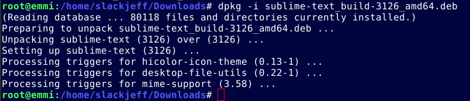

Instalação de Pacotes .deb
Conhecendo
Alguns pacotes não estão no repositório oficial do Debian, podemos recorrer a pacotes de terceiros ou até mesmo empacotar os programas para .deb e instalar facilmente com um simples comando via terminal.Quais as vantagens e desvantagens?
A vantagem é que quase todos programas quando feitos para GNU/Linux, levam pacotes .deb como a primeira opção.
A desvantagem é a segurança, por isso cuide bem, como somos baseados em Debian, seguimos os mesmos passos quando se fala em segurança, levando apenas pacotes oficiais.
Instalação
Em nossa demonstração vamos utilizar o editor Sublime.Vamos navegar até o site oficial, entrar no menu Download e escolher a opção Ubuntu 64 bit, Ubuntu por ser baseado em Debian, leva o pacote .deb também.
Após ter feito o Download, vamos abrir o terminal e logar como root e navegar até onde está localizado o arquivo.
Em nosso caso o arquivo está localizado em Downloads
Vamos usar o comando cd para navegar até a pasta desejada e logo após rodamos o comando ls para saber qual o nome do arquivo.
# cd /home/NOMEdoUSUARIO/Downloads# ls --colorLocalizado o nome do arquivo, vamos agora instalar o pacote, para isso vamos rodar o comando dpkg -i NOMEdoPrograma você pode autocompletar o nome, por exemplo digite sublime e tecle TAB e o nome se auto completará.
# dpkg -i sublime-text_build-3126_amd64.deb
Pronto, a instalação foi concluída.